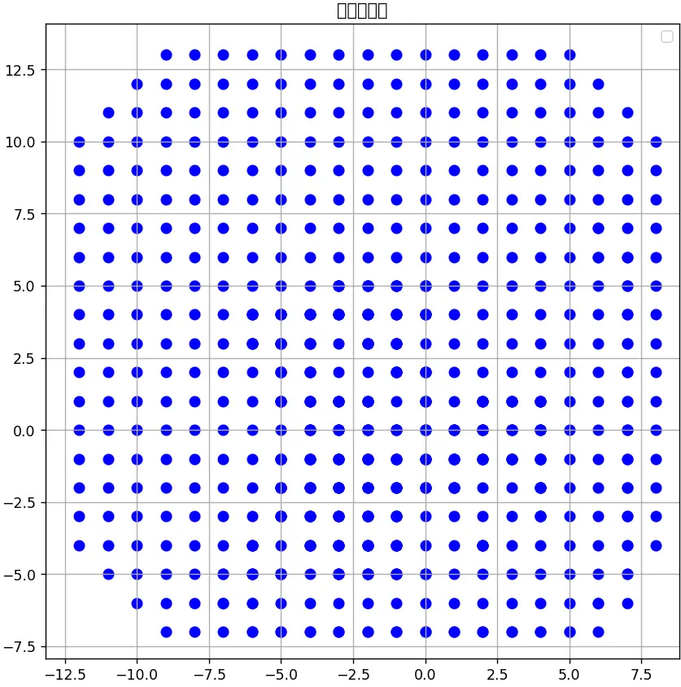
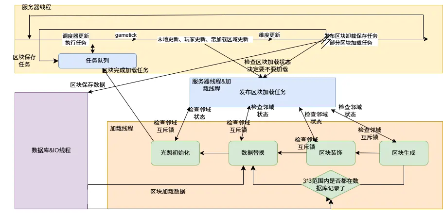

本文将对之前整个系列的区块加载相关机制做一个总结，因为内容太多太杂了，提取一个简洁清晰的模型。
在研究了这么多区块加载机制后，有一个很重要的问题便是如何计算与操控多线程加载时各种事件发生的顺序。在竞态漏洞中很重要的一个就是对时序的操控，而这便是了解区块加载机制的重要意义之一。
抛开复杂的计算，区块加载的触发由两个重要的元素控制：加载源与加载半径。简单来说，会被创建的区块范围便是以加载源为中心，半径为加载半径的区域，而加载半径对于玩家而言是模拟距离和视距取最大值再加五。

上图为模拟四、视距五下玩家创建区块的范围
创建完区块后，这些区块由一个局域区块管理器管理。而不是所有区块都是被创建的，如果这个区块本身已经记录在主区块管理器了（被别的东西加载过了），而且如果是加载完成的就直接加入自己管理的区域里，如果创建了但没加载完便对它进行邻域推进检测，检查并发布以它为中心3*3范围内区块的加载任务。如果没被创建过才会去创建并发布它单独的加载任务。
一个反常识的事实是完成加载的区块的范围其实不是一个固定的范围，它受到很多因素影响。我们可以简化并抽象区块加载的逻辑并抽象出一些规则：
1、区块加载发生在异步线程
2、区块加载分为四个阶段，区块生成，区块装饰，数据替换和光照初始化
3、区块完成加载发生在服务器线程，只有在这里进行处理后游戏的实际更新才能影响到它。
4、区块加载的任务中，工作者（将执行任务的线程想象成一个工作者）能获取和修改的一切信息都局限于以要加载的区块为中心的3*3范围的区块。特例是区块生成和区块装饰，区块生成只能获取和修改它区块本身的信息，区块装饰只能访问修改以它为中心3*3内没有被发布或者完成数据替换任务的区块。
5、当一个除了区块生成以外的区块加载的任务正在执行时，它会尝试锁住以它为中心3*3的区块，它锁了别人再锁就会失败，失败就会不执行这个任务。也就是当一个区块周围3*3有别的区块在进行区块加载任务时，它便不会继续并且把自己加回等待加载的区块的列表。
6、一个区块周围的3*3范围内的区块如果都能在数据库内被查找到（被保存过，也就是区块里的信息被修改过，比如放置破坏方块）它便会直接跳过区块生成和区块装饰进入数据替换。
7、一个区块完成一个加载任务后会提醒周围的8个区块包括它自己，检测每个区块的周围8个区块是否和被检测的区块处于同一加载阶段或者更高的加载阶段，如果在才能进行数据替换和光照初始化。对于区块装饰有一套特殊的规则，详情见上篇专栏。
7.5 区块tick也会尝试上那个互斥锁

计算区块加载，首先要了解的变量有以下几个：
1、区块加载任务优先级，取决于加载源和区块位置
2、区块加载任务的计算压力
3、区块的邻域是否存在于数据库
4、服务器线程的计算压力
5、邻域区块的加载状态
一般情况而言，对区块加载顺序的计算一般是估计，或者在人为影响这些变量后进行精确计算。
首先可以很明显看出的一点是区块加载范围不等于区块完成加载范围。对于在区块加载范围边缘的区块们，它们邻域中存在根本没有加入局域区块管理器的区块。所以它们因为没法获取到外面的区块而一直卡在状态0（无法发布任务）
随后我们要获知数据库内记录的区块的位置，这个在原版中需要统计有哪些区块被更改过（放置方块，破坏方块等），哪些没有。在知道这些后我们就可以知道哪些区块会跳过区块生成和区块装饰。
然后我们根据想要计算顺序的区块们的位置们算出它们的优先级们，这样我们就知道了谁的任务会先被发布。我们还知道加载线程一共有三个，这样就可以算出一个加载任务开始的大致时间。
先发的任务会把周围的区块锁住，也就是它周围的区块就无法进行加载任务了。这个区块的加载任务计算量越大，它周围的区块就越晚能进行下一步的加载。
这会影响到周围5*5的区块，因为那些区块也需要锁住它们邻域的区块才能进行任务，同时还需要邻域区块状态大于等于自己的状态才能继续。
当一个区块完成了光照初始化，它还需要在服务器线程完成加载，这取决于服务器线程的计算压力
在区块加载顺序的操控中，玩家能操控的变量主要是：区块的位置，区块是否存在于数据库里，区块数据替换阶段的计算量，服务器线程的计算压力。